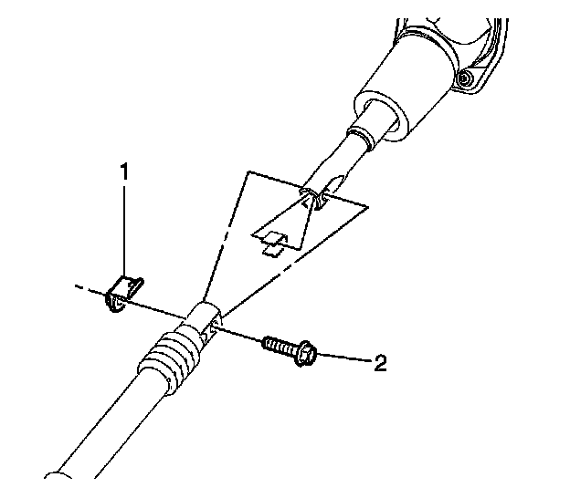

Steering - Squeak When Turning/High Steering Effort
TECHNICALBulletin No.: 06-02-35-003C
Date: June 26, 2009
Subject: Rub or Squeak Noise While Turning, Steering Wheel Slowly Returns to Center and/or Increased Steering Effort (Replace Steering Column Seal and Shim Lower Steering Column Mounting Locations, If Necessary)
Models:
2007-2009 Cadillac Escalade (including Hybrid), Escalade ESV, Escalade EXT
2007-2009 Chevrolet Avalanche, Silverado (including Hybrid), Suburban, Tahoe (including Hybrid)
2007-2009 GMC Sierra (including Hybrid), Yukon (including Hybrid), Yukon XL, Yukon Denali, Yukon Denali XL
Only Equipped with Active Brake Control (RPO JL4)
Supercede:
This bulletin is being revised to clarify that this only applies to RPO JL4 equipped vehicles, add Correction information and update part numbers. Please discard Corporate Bulletin Number 06-02-35-003B (Section 02 - Steering).
Condition 1
Some customers may comment on a rub or squeak noise heard from the steering column when turning the steering wheel at slow speeds. This condition will make an audible noise.
Cause 1
The steering column intermediate shaft may contact the steering column seal at the bulkhead.
Correction 1a
Remove the steering column seal from front of dash to verify that the noise is the result of the rubbing between the steering column seal and the upper I-shaft. Refer to Steering Column Seal Replacement in SI.
Adjust the connection alignment of the upper and lower I-shaft (refer to following graphic) to minimize the elliptical path of the attachment joint during a lock to lock steering maneuver. Once aligned, follow the installation steps below.

Install the steering shaft coupling nut (1) and bolt (2) at the steering shaft coupling and tighten to 50 Nm (37 lb ft).
Correction 1b
Replace the steering column seal with P/N♦25815601. Refer to Steering Column Seal Replacement in SI. The new seal has a larger outside diameter to accommodate the steering column intermediate shaft orientation.
Condition 2-Only Applies for vehicles built between VIN breakpoints 7R100001 - 7R100427 (Arlington) and 7J100001 - 7J100141 (Janesville)
Important
For vehicles built between and including VIN breakpoints 7R100001 - 7R100427 (Arlington) and 7J100001 - 7J100141 (Janesville), shim the lower steering column mounting locations, which should be performed in addition to replacing the boot seal on the vehicles built within the VIN breakpoints. DO NOT install shims to the steering column that are not between VIN breakpoints 7R100001 - 7R100427 (Arlington) and 7J100001 - 7J100141 (Janesville). The condition will become worse because the I-shaft is on the wrong angle and rubs the boot even more.
Some customers may comment on a rub noise when turning the steering wheel and/or the steering column slowly returns to center after turns. Other customers may comment on a perceived increase in steering effort. This condition may or may not have an audible noise.
Cause 2
The instrument panel structure mounting location may be forcing the steering column intermediate shaft to interfere with the front of dash (FOD) seal and brake booster.
Correction 2
DO NOT REPLACE THE STEERING COLUMN.
Install two (2) 3.0 mm (0.12 in) shims (washers) to the steering column lower mounting bracket locations following the procedure below.
1. Disable the supplemental inflatable restraint (SIR) system. Refer to SIR Disabling and Enabling in SI.
2. Remove the driver's side IP side panel. Refer to Instrument Panel Outer Trim Cover Replacement in SI.
3. Remove the park brake release handle. Refer to Parking Brake Release Handle Assembly Replacement in SI.
4. Remove the knee bolster. Refer to Knee Bolster Replacement in SI.
5. Remove the steering column brace. Refer to Instrument Panel Driver Knee Bolster Deflector Replacement in SI.
6. Lower the steering column by removing the steering column nuts.
Tip
An adhesive such as 3M(TM) strip caulk, or equivalent, can be used to hold the shims in place during installation of the steering column.
7. Install washers on the lower column mounting bracket (refer to diagram).
8. Reinstall the steering column and steering column nuts.
Important
Tighten the steering column lower fasteners before you tighten the steering column upper fasteners.
9. Tighten the steering column nuts.
Tighten
Tighten the steering column nuts to 27 Nm (20 lb ft).
10. Install the steering column brace. Refer to Instrument Panel Driver Knee Bolster Deflector Replacement in SI.
11. Install the knee bolster. Refer to Instrument Panel Driver Knee Bolster Deflector Replacement in SI.
12. Install the park brake handle. Refer to Parking Brake Release Handle Assembly Replacement in SI.
13. Install the driver's side IP side panel. Refer to Instrument Panel Outer Trim Cover Replacement in SI.
14. Enable the SIR system. Refer to SIR Disabling and Enabling in SI.
Parts Information
Warranty Information
For vehicles repaired under warranty, use the table above.

Disclaimer